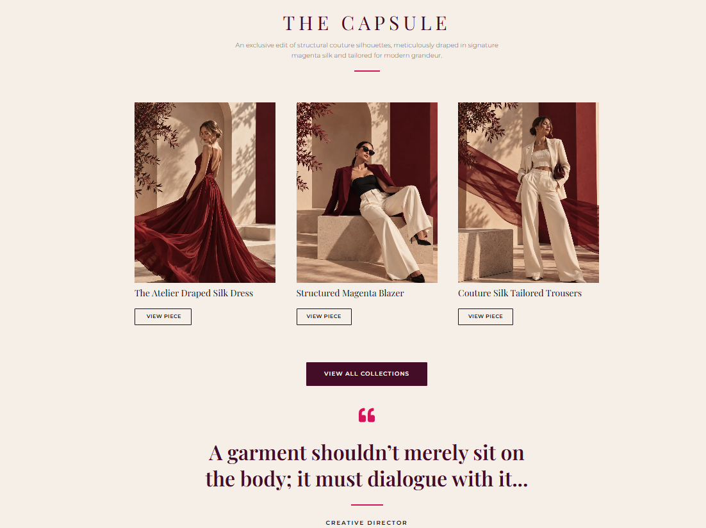

Web Developer & Team Lead

Overview
My role at Docklands Creative combines hands-on WordPress development with leading a small team and working directly with clients.
Featured build
A multi-page client website built in WordPress with Elementor. It includes Home, About, Our Services, Collections, Contact, and Cart pages, and is currently in coming-soon mode ahead of launch.
What I do
- Lead the build of client business websites end-to-end using WordPress, Elementor, HTML, CSS, and JavaScript, from initial design through launch.
- Coordinate a small development team via Slack and Microsoft 365, keeping projects on schedule and aligned with client requirements.
- Manage direct client communication, translating business requirements into functional, on-brand websites delivered on time.